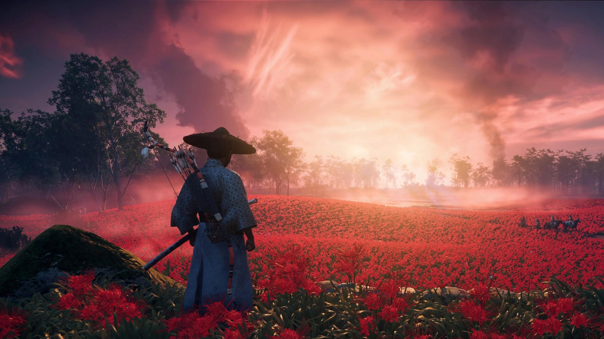
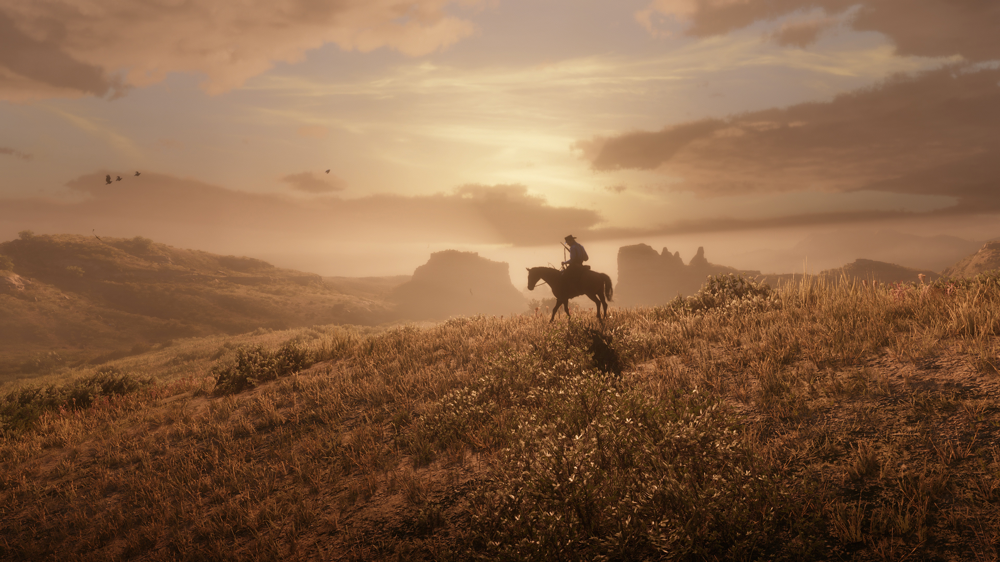
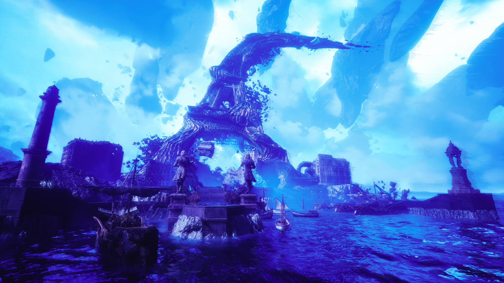
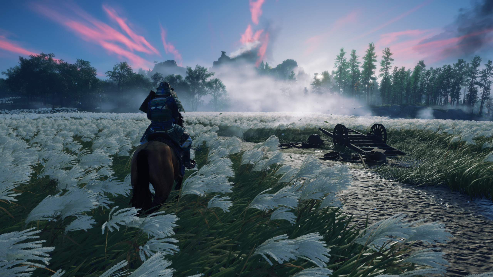
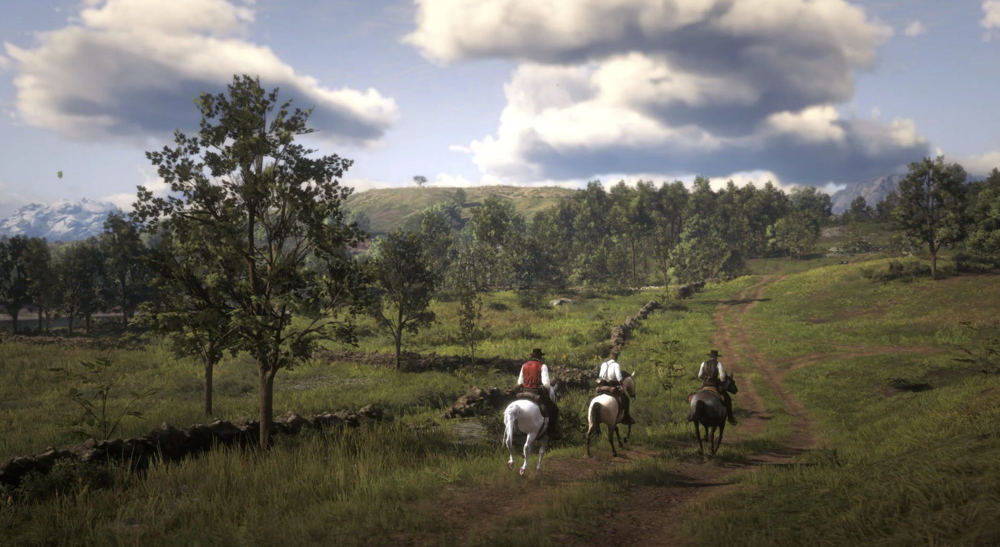
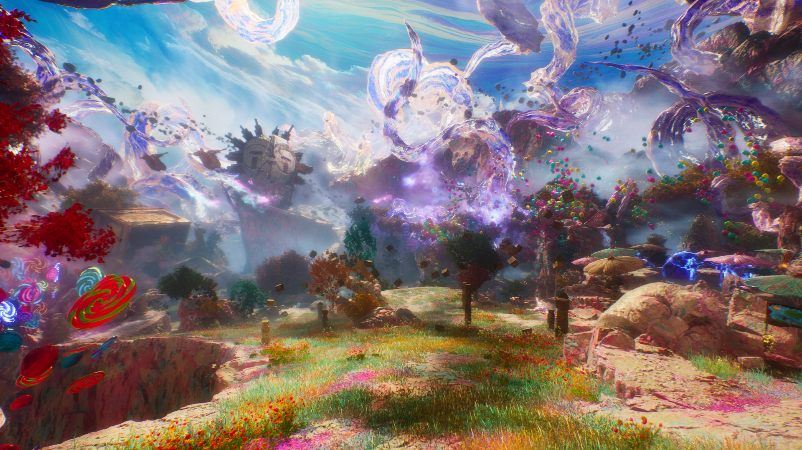

A video game world is more than just a setting. Every environment, color, sound, and visual detail can help tell a story without needing a single word.
Some games use realistic landscapes, while others create completely imaginative worlds. Both approaches show how visual design can shape the way players experience a story.
Stories Told Through Environments
Game environments can communicate emotion, history, and personality. A quiet landscape can create a sense of peace, while an abandoned city can make a player feel isolated or uneasy.

Ghost of Tsushima
Ghost of Tsushima uses color, lighting, and natural landscapes to create a beautiful atmosphere. The movement of leaves, tall grass, and changing seasons makes the environment feel alive while supporting the story of the game.

Red Dead Redemption 2
Red Dead Redemption 2 creates a believable world through its detailed environments. From small towns to open landscapes, the setting helps communicate the history and atmosphere of the world.

Clair Obscur: Expedition 33
Clair Obscur: Expedition 33 uses unusual architecture, dramatic lighting, and surreal environments to create a world that feels almost like a painting. Its visual direction helps establish the game's mysterious atmosphere.
The Details Make the World
Sometimes the smallest visual details can make the biggest difference. Lighting, textures, architecture, and objects placed throughout an environment can make a fictional world feel believable.



Explore the Next Page
Visual storytelling is only one part of what makes video games creative. Players can also become creators themselves.
Explore Player Creativity